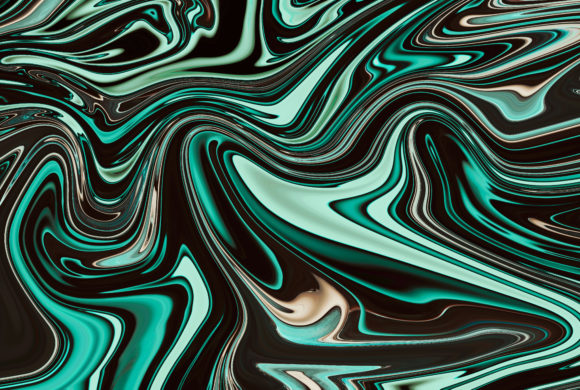

Freepik
O Freepik é um site que possui diversos materias disponíveis para download, incluindo texturas.

Pexels
No Pexels, há diversas opções de materiais para download. É também possível encontrar texturas.

Texturelabs
Todas as diversas texturas no Texturelabs são gratuitas para uso comercial e para trabalhos pessoais.

Unsplash
No unsplash você encontra diversas texturas e coleções de imagens com bastante qualidade e gratuitas.
Pixabay
O site Pixabay possui muitas opções e materiais para design, incluindo diversas opções de texturas gratuitas.